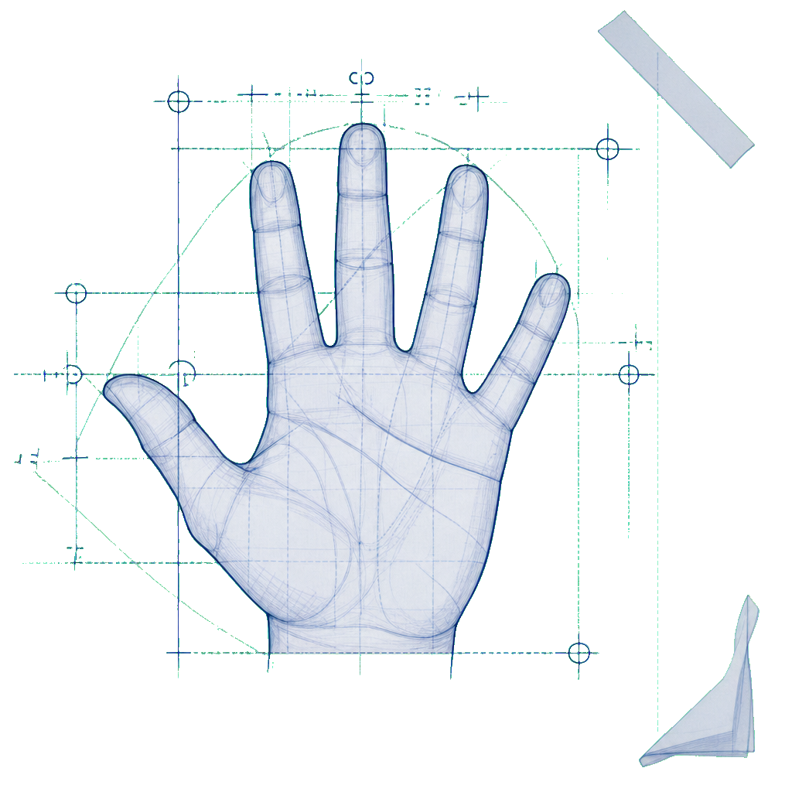

Utilizar preposiciones de lugar en una conversación con apoyo de un mapa.
Una meta clara
protege el tiempo
para aprender
Diseñar una clase es proyectar un camino intencionado para que el aprendizaje suceda.
Primero, define qué debe cambiar
Un objetivo de aprendizaje comunica los conocimientos, habilidades y conductas que el estudiantado debe lograr y demostrar al finalizar una experiencia educativa.
“Describe de manera específica conocimientos, habilidades y conductas que los educadores establecen para sus estudiantes”.Marisol Sirhan, Pontificia Universidad Católica de Chile
Habilidad / skill
El conocimiento puesto en acción
Son acciones prácticas que las y los estudiantes realizan al usar activamente sus conocimientos en situaciones reales o simuladas.
Medir la longitud de objetos del entorno con herramientas estándar.
Ubicar acontecimientos de un periodo en una línea de tiempo.

Cinco capas. Una meta sin ambigüedades.
George Doran formuló este marco en 1981. Abre cada capa para inspeccionar el criterio y su prueba de calidad.
Capa S
Específico
Un objetivo claro no deja margen a dobles interpretaciones. Precisa las acciones exactas que ocurrirán en el aula.
Preguntas de control¿Quién?, ¿cuándo?, ¿dónde?, ¿qué? y ¿por qué?
Lee el objetivo por capas
Selecciona una frase destacada. La anotación explica qué criterio hace visible y por qué.
Cada color es una capa del mismo plano. En pantallas táctiles, pulsa la frase para inspeccionarla.
Antes de aprobar el plano, revisa tres condiciones
Un objetivo puede contener las cinco letras y aun necesitar ajustes pedagógicos.
Estudiante¿Dice qué hará quien aprende?
Expresa lo que niñas, niños y jóvenes sabrán o serán capaces de hacer; no lo que la persona docente va a explicar.
Evidencia¿Deja un rastro observable?
Se fundamenta en producciones, desempeños o respuestas tangibles que permiten evaluar y retroalimentar sin castigo.
Rigor¿Propone el nivel cognitivo apropiado?
Se deriva de metas nacionales como EBC y DBA y usa la Taxonomía de Bloom para escalar los procesos de pensamiento.
El tiempo de clase no se recupera. Se protege.
Una meta clara funciona como un escudo: reduce la fricción operativa y reserva más minutos para la indagación, el aprendizaje activo y la metacognición.
Con un foco cognitivo y una evidencia definidos, disminuyen las actividades de relleno y las explicaciones que dan vueltas.
Pon a prueba tu ojo de planeación
Dos decisiones breves. Recibirás retroalimentación inmediata y podrás intentarlo otra vez.
Pregunta 1 de 2
Un Eco planeó: “Los estudiantes entenderán la fotosíntesis en la sesión de hoy”. ¿Cuál es el principal reto?
Tu plano está listo para llevarlo al aula
Haz una pausa para reconocer cómo cambió tu comprensión y piensa en una clase próxima donde puedas aplicar lo aprendido.
que redactar un objetivo de aprendizaje era solo una tarea técnica porque…
un objetivo SMART en mi aula para proteger el tiempo de aprendizaje mediante…